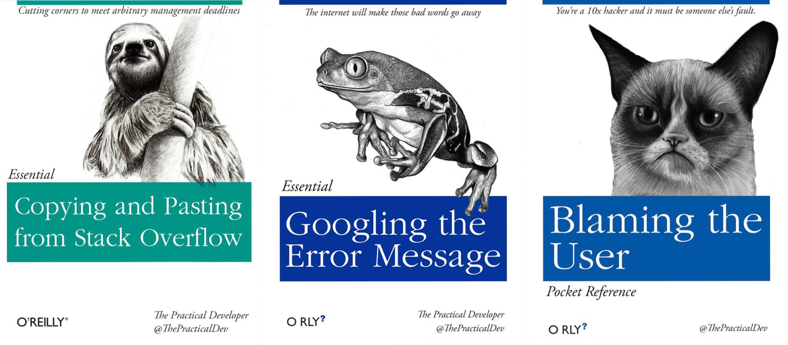

微軟未來AI人先修班」1月15日隆重登場
熱血推動台灣程式教育，結合台灣AI人才培育政策 目標培育500名學生成為人才種子
熱血推動台灣程式教育，結合台灣AI人才培育政策 目標培育500名學生成為人才種子

臺灣保險區塊鏈平臺測試環境啟用
同時採用了2套主流區塊鏈技術，包括Hyperledger超級帳本和以太坊（Ethereum）。
同時採用了2套主流區塊鏈技術，包括Hyperledger超級帳本和以太坊（Ethereum）。

[Java] Stream管線操作觀念探討
Stream就如同一個迭代器(Iterator)，單向不可往復，數據只能探取一次，探取一次後便用盡了。
Stream就如同一個迭代器(Iterator)，單向不可往復，數據只能探取一次，探取一次後便用盡了。
臉書打造包容性AI，拿掉影像辨識的有色眼鏡
一位來自奈及利亞的臉書AR/R技術業務主管，在發現自己會被智慧視訊裝置的智慧相機忽略後，開始了他的包容性人工智慧研究
一位來自奈及利亞的臉書AR/R技術業務主管，在發現自己會被智慧視訊裝置的智慧相機忽略後，開始了他的包容性人工智慧研究